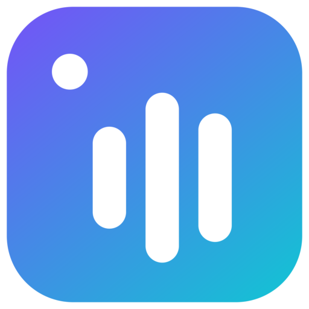

桌面端（Win/Linux）已实现；Android head 复用同一 UI 与核心，仅替换文件访问层。
按 .cs / .axaml 行数（不含 obj/bin）
按功能清单的条目统计；绿色为已实现，黄色为部分，灰色为未实现
● = 支持；○ = 语义上不适用
| 源 | 标签 | 封面 | 歌词 | 备注 |
|---|---|---|---|---|
| 网易云音乐 | 已实测 详情接口取封面 | |||
| QQ 音乐 | 已实测 无专辑字段 | |||
| 酷狗音乐 | 已实测 KRC 歌词链 | |||
| 酷我音乐 | 已实测 歌词接口 301 | |||
| MusicBrainz | 已实测 1 req/s | |||
| Cover Art Archive | 按 release id | |||
| iTunes | 已实测 1200px 封面 | |||
| Last.fm | 需自备 API key | |||
| LRCLIB | 已实测 同步歌词 |
读取由 TagLib# 覆盖；写入能力随容器不同
| 容器 | 标签格式 | 读 | 写 |
|---|---|---|---|
| MP3 | ID3v1 / ID3v2.3 / ID3v2.4 | ||
| FLAC | Vorbis Comment + PICTURE | ||
| APE | APEv2 | ||
| WavPack | APEv2 | ||
| TTA | ID3v2 / APEv2 | ||
| MPC | APEv2 / ID3v2 | ||
| OGG Vorbis | Vorbis Comment | ||
| Ogg Opus | Vorbis Comment | ||
| M4A / MP4 | iTunes ilst | ||
| WAV | RIFF INFO / ID3 | ||
| AIFF | ID3v2 | ||
| WMA / ASF | ASF 属性对象 | ||
| DSF / DFF | ID3v2 |
自动化测试 + 在线源实测（2026-10-26）